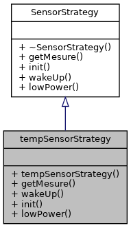
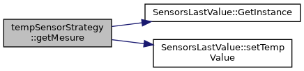

Strategie des capteurs de temperature. Plus de détails...
#include <tempsensorstrategy.h>
Graphe d'héritage de tempSensorStrategy:

Graphe de collaboration de tempSensorStrategy:

Fonctions membres publiques | |
| tempSensorStrategy () | |
| Construit la strategie. Plus de détails... | |
| int | getMesure () override |
| Recupere la mesure du capteur physique. Plus de détails... | |
| int | wakeUp () override |
| Reveil le capteur physique. Plus de détails... | |
| int | init () override |
| Initialise le capteur physique. Plus de détails... | |
| int | lowPower () override |
| Met le capteur physique en mode basse consomation. Plus de détails... | |
 Fonctions membres publiques hérités de SensorStrategy Fonctions membres publiques hérités de SensorStrategy | |
| virtual | ~SensorStrategy () |
| Detruit la strategie. Plus de détails... | |
Description détaillée
Strategie des capteurs de temperature.
Documentation des constructeurs et destructeur
◆ tempSensorStrategy()
| tempSensorStrategy::tempSensorStrategy | ( | ) |
Construit la strategie.
Documentation des fonctions membres
◆ getMesure()
|
overridevirtual |
Recupere la mesure du capteur physique.
- Renvoie
- int retourne la mesure du capteur
Implémente SensorStrategy.
Voici le graphe d'appel pour cette fonction :

◆ init()
|
overridevirtual |
Initialise le capteur physique.
- Renvoie
- retourne 0 si tout c'est bien passe, retourne le code erreur du capteur sinon
Implémente SensorStrategy.
◆ lowPower()
|
overridevirtual |
Met le capteur physique en mode basse consomation.
- Renvoie
- retourne 0 si tout c'est bien passe, retourne le code erreur du capteur sinon
Implémente SensorStrategy.
◆ wakeUp()
|
overridevirtual |
Reveil le capteur physique.
- Renvoie
- int retourne 0 si tout c'est bien passe, retourne le code erreur du capteur sinon
Implémente SensorStrategy.
La documentation de cette classe a été générée à partir des fichiers suivants :
- /home/teddy/Mbed Programs/ProjetCo/tempsensorstrategy.h
- /home/teddy/Mbed Programs/ProjetCo/tempsensorstrategy.cpp